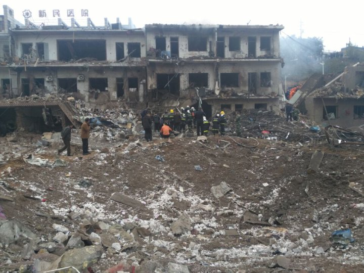

Creative Multimedia Programming Report China's Latest Deadly Industrial Explosion Spotlights Dire Workplace Safety

Oct 25, 2016
A suspected industrial explosion tore through a small town in northwestern China on Monday, leaving at least 14 people dead and almost 150 injured, while cleaving a crater several feet deep in the street and shattering the windows of a nearby hospital and kindergarten.
The blast rocked Xinmin township of Fugu county, Shaanxi province, at around 2 p.m. local time, reports state news wire Xinhua. Some of the wounded were seen fleeing the scene covered in blood, while six people were pulled from rubble in the explosion’s immediate aftermath, reports local news site Huashan News.
Investigators believe the likely cause of the blast was improperly stored chemicals in a steel hut used by a local construction crew. Police are questioning those responsible, reports local media.
“There are many coal mines around us and many people think some coal-mine boss stored the explosives in the building, which caused the tragedy,” Dr. Wang Xueming, who has worked at a health clinic in Xinming for 20 years, tells TIME.
Deadly industrial accidents are all too common in China, as the nation has embraced a process of rapid industrialization that is credited for hauling more than 600 million people out of poverty by prioritizing economic growth over environmental or health and safety concerns.
However, the government says it is addressing the problem as part of the next stage of national development. In the first half of this year, there were 13,723 work-related deaths in China — 75 every day — yet this still represents an 8.1% drop from the previous year, according to the State Administration for Work Safety. (By comparison, 4,821 American workers were killed on the job in 2014.)
That said, according to Hong Kong–based China Labor Bulletin (CLB), these figures are lower partly owing to changes in the way workplace accidents are defined and calculated. There are weighty political pressures to report improvements in environmental and workplace safety, especially after last year’s colossal chemical explosion at a port storage facility in the northeastern port city of Tianjin, which killed 173 people and made headlines around the world. A total of 123 people, primarily local officials and company executives, were deemed responsible for the disaster.
In China, enforcement of workplace safety generally involves punishing top officials rather than empowering workers, meaning accidents are frequently glossed over. In Shaanxi province, officials were recently accused of stuffing pollution-monitoring equipment with cotton wool to filter out impurities, reports the South China Morning Post.
Compounding the issue, typically overstretched safety inspectors are generally only held culpable for disasters in facilities they have actually visited. Therefore, it is often personally beneficial for them to concentrate on scrutinizing a few relatively safe facilities rather than prioritizing potentially hazardous ones.
Compounding the issue, typically overstretched safety inspectors are generally only held culpable for disasters in facilities they have actually visited. Therefore, it is often personally beneficial for them to concentrate on scrutinizing a few relatively safe facilities rather than prioritizing potentially hazardous ones.
“There’s a lot of incentive to just keep quiet, hide incidents that do happen for fear of repercussions and not inspect,” says CLB researcher Keegan Elmer. "The strategy of punishing rather than really preventing is still a common way of looking at work safety among officials and employers."
In fact, the CLB reports more major explosions in China in the first nine months of this year than last. In addition, Greenpeace reports 232 chemical-related accidents in China from January to August this year — an average of 29 per month.
“Employers just don’t take workplace safety seriously,” says Elmer. “One of the only ways to increase workplace safety is to increase both the training and involvement of the actual workers whose lives are on the line in these dangerous facilities.”
The Xinmin explosion comes at a sensitive time for the ruling Chinese Communist Party, which is holding a behind closed doors plenary meeting in Beijing this week. By Tuesday, the term Shaanxi explosion was blocked on China’s Twitter-like microblog Weibo, and state censors began purging any footage of the Xinmin blast. “Deleting the posts is more scary than the explosion itself,” posted one Weibo user.
—With reporting by Yang Siqi / Beijing
Khizer Iqbal
 Creative Multimedia Progmramming
Creative Multimedia Progmramming